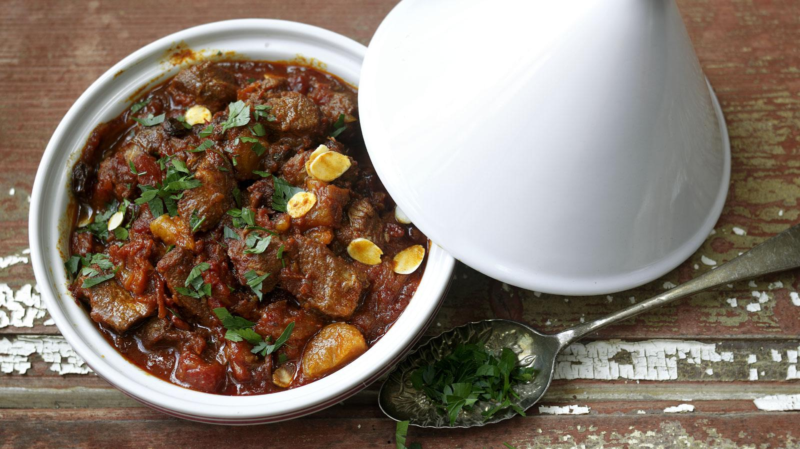

Moroccan Lamb Tagine

This authentic lamb tagine recipe will take you to slow-cooked perfection in six simple steps -
just kick back and let it do its thing.
Tagine cooking is associated with Moroccan cuisine. Classically incorporates savory and sweet ingredients to make a complex dish with a richly spiced sauce.
Ingredients:
- 1.1kg/2½lb cubed lamb shoulder (5cm/2in chunks)
- 2 large onions, grated
- 1 tsp cayenne pepper
- 2 tsp ground black pepper
- 1½ tbsp paprika
- 1½ tbsp ground ginger
- 1 tbsp turmeric
- 2 tsp ground cinnamon
- 2 tbsp olive oil
- 2 tbsp argan oil
- 3 cloves garlic, crushed
- 570ml/1 pint tomato juice
- 2 x 400g tinned chopped tomatoes
- 115g/4oz dried apricots, cut in half
- 55g/2oz dates, cut in half
- 55g/2oz sultanas or raisins
- 85g/3oz flaked almonds
- 1 tsp saffron stamens, soaked in cold water
- 600ml/1 pint lamb stock
- 1 tbsp clear honey
- 2 tbsp coriander, roughly chopped
- 2 tbsp flat leaf parsley, roughly chopped
Steps:
- Place the cayenne, black pepper, paprika, ginger, turmeric and cinnamon into a small bowl and mix to combine. Place the lamb in a large bowl and toss together with half of the spice mix. Cover and leave overnight in the fridge.
- Preheat the oven to 150C/300F/Gas2.
- Heat 1 tbsp olive oil and 1 tbsp of argan (or vegetable) oil in a large casserole dish. Add the grated onion and the remaining spice mix and cook over a gentle heat for 10 minutes so that the onions are soft but not coloured. Add the crushed garlic for the final 3 minutes.
- In a separate frying pan, heat the remaining oil and brown the cubes of lamb on all sides then add the browned meat to the casserole dish. De-glaze the frying pan with ¼ pint of tomato juice and add these juices to the pan.
- Add the remaining tomato juice, chopped tomatoes, apricots, dates, raisins or sultanas, flaked almonds, saffron, lamb stock and honey to the casserole dish. Bring to the boil, cover with a fitted lid, place in the oven and cook for 2-2½ hours or until the meat is meltingly tender.
- Place the lamb in a tagine or large serving dish and sprinkle over the chopped herbs. Serve.
Back to top
Homepage